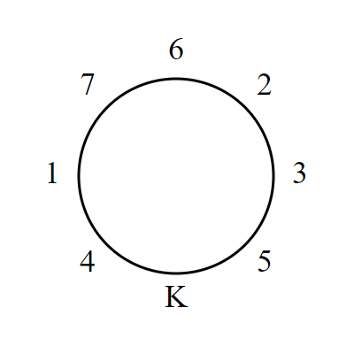

Project Euler 669
Project Euler 669
题目
The King’s Banquet
The Knights of the Order of Fibonacci are preparing a grand feast for their king. There are \(n\) knights, and each knight is assigned a distinct number from \(1\) to \(n\).
When the knights sit down at the roundtable for their feast, they follow a peculiar seating rule: two knights can only sit next to each other if their respective numbers sum to a Fibonacci number.
When the \(n\) knights all try to sit down around a circular table with \(n\) chairs, they are unable to find a suitable seating arrangement for any \(n>2\) despite their best efforts. Just when they are about to give up, they remember that the king will sit on his throne at the table as well.
Suppose there are \(n=7\) knights and \(7\) chairs at the roundtable, in addition to the king’s throne. After some trial and error, they come up with the following seating arrangement (K represents the king):

Notice that the sums \(4+1, 1+7, 7+6, 6+2, 2+3,\) and \(3+5\) are all Fibonacci numbers, as required. It should also be mentioned that the king always prefers an arrangement where the knight to the his left has a smaller number than the knight to his right. With this additional rule, the above arrangement is unique for \(n=7\), and the knight sitting in the \(3\text{rd}\) chair from the king’s left is knight number \(7\).
Later, several new knights are appointed to the Order, giving \(34\) knights and chairs in addition to the king’s throne. The knights eventually determine that there is a unique seating arrangement for \(n=34\) satisfying the above rules, and this time knight number \(30\) is sitting in the \(3\text{rd}\) chair from the king’s left.
Now suppose there are \(n=99\,194\,853\,094\,755\,497\) knights and the same number of chairs at the roundtable (not including the king’s throne). After great trials and tribulations, they are finally able to find the unique seating arrangement for this value of \(n\) that satisfies the above rules.
Find the number of the knight sitting in the \(10\,000\,000\,000\,000\,000\text{th}\) chair from the king’s left.
解决方案
令标准斐波那契数列 \(F_0 = 0, F_1 = 1, F_{t+2} = F_{t+1} + F_t.\) 题目给的 \(n = 99,194,853,094,755,497\) 恰好是 \(F_{83}\)，并令 \(n = F_k,a = F_{k-1}.\) 那么本题就是 \(k = 83\)，因此 \(a = F_{82}\)。
一个基本事实是相邻斐波那契数互素：\(\gcd(F_{k-1},F_k)=1 \Rightarrow \gcd(a,n)=1.\) 这保证了乘以 \(a\) 的映射在模 \(n\) 的剩余系上是双射，后面用来证明不会出现重复骑士。
下面证明在 \(n=F_k\) 的情形下，骑士 \(n\) 必定紧挨国王，且在国王偏好下必定坐在国王右侧。设骑士 \(n\) 的某个相邻骑士为 \(x\)，则必须满足 \(n+x\) 是斐波那契数，并且 \(1\le x\le n-1\)，因此\(n+1\le n+x\le 2n-1.\)代入 \(n=F_k\) 得到区间 \([F_k+1,2F_k-1]\)。在这个区间内能出现的斐波那契数只有 \(F_{k+1}\)：因为 \(F_{k+1}=F_k+F_{k-1}\le 2F_k-1\)，而下一项 \(F_{k+2}=F_{k+1}+F_k>2F_k-1\)，更小的 \(F_k\) 又小于下界 \(F_k+1\)。于是必有\(n+x=F_{k+1}=F_k+F_{k-1}\Rightarrow x=F_{k-1}=a.\)
也就是说，当 \(n=F_k\) 时，骑士 \(n\) 作为骑士图中的节点，唯一可能的骑士邻居只能是 \(a\)。但骑士在圆桌上有两个相邻座位，若骑士 \(n\) 不挨着国王，则它两侧都必须是骑士，从而需要两个骑士邻居，这将迫使两侧都为 \(a\)，与每个骑士只出现一次矛盾。因此骑士 \(n\) 必定与国王相邻。又由于国王偏好要求左邻编号小于右邻编号，而 \(n\) 是最大编号，所以骑士 \(n\) 不可能坐在国王左侧，只能坐在国王右侧。
把国王右侧相邻的骑士固定为编号 \(n\)（最大号），这样自动满足国王偏好：国王左侧骑士一定小于右侧骑士。
接下来沿着骑士链从国王右侧往同一方向数座位（不经过国王），定义第 \(t\) 个位置上的骑士编号为 \(b_t\)，其中\(b_1 = n.\)
对 \(t\ge 2\)，用系数 \(m_t\) 来定义。若 \(t=2j\) 为偶数：\(m_t=j\)；若 \(t=2j+1\) 为奇数：\(m_t=n-j.\)并令\(b_t \equiv m_t\cdot a \pmod n,\) 其中把同余类 \(0\) 解释为编号 \(n\)（因为骑士编号范围是 \(1,\dots,n\)）。直观上，系数按\(n,1,n-1,2,n-2,3,\dots\)交替摆动，然后统一乘上 \(a\)（模 \(n\)）。
可见，由于 \(\gcd(a,n)=1\)，乘法映射\(x \mapsto a x \pmod n\)在 \(\{0,1,\dots,n-1\}\) 上是双射。而 \({m_t}\) 这组系数显然两两不同且都不为 \(0\)（在模 \(n\) 意义下），因此 \(\{b_t\}\) 也两两不同；再加上把 \(0\) 映射回 \(n\)，最终得到的是对 \(\{1,2,\dots,n\}\) 的一个排列。
骑士链上的相邻对就是 \((b_t,b_{t+1})\)。分两类讨论。
偶数位与紧随其后的奇数位：\((b_{2j}, b_{2j+1}).\)由定义\(b_{2j} \equiv ja \pmod n,b_{2j+1} \equiv (n-j)a \equiv -ja \pmod n.\)因此\(b_{2j}+b_{2j+1}\equiv 0 \pmod n.\)同时，二者都在 \(1,\dots,n-1\)（不会是 \(0\)，否则对应系数为 \(0\)），所以和落在区间 \([2,2n-2]\)。在这个区间里唯一能被 \(n\) 整除的数就是 \(n\)，故\(b_{2j}+b_{2j+1}=n=F_k,\)满足规则。
奇数位与紧随其后的偶数位：\((b_{2j-1}, b_{2j}).\)类似的，有\(b_{2j-1}\equiv (n-(j-1))a \pmod n, b_{2j}\equiv ja \pmod n,\)所以\(b_{2j-1}+b_{2j}\equiv (n+1)a \equiv a \pmod n.\)由于 \(b_{2j-1}\in[1,n]\)、\(b_{2j}\in[1,n-1]\)，和落在 \([2,2n-1]\)。与 \(a\) 同余的可能值只有\(a,a+n.\)而\(a=F_{k-1}, a+n=F_{k-1}+F_k=F_{k+1},\)两者都是斐波那契数，因此也满足规则。
综上，相邻骑士的编号和总是斐波那契数，构造合法。
我们构造的是从国王右侧开始的序列 \(b_1,b_2,\dots,b_n\)。而题目要的是从国王左侧开始数第 \(S\) 张椅子。因为骑士形成一条链，国王左侧相邻骑士就是链的末端，所以，国王左边第 \(S\) 张椅子对应 \(b_{n-S+1}\)。
令\(r = n-S\)（注意\(0\le r<n\)）则目标是 \(t=r+1\)。
根据 \(t\) 的奇偶决定系数 \(m_t\)：
- 若 \(r\) 为偶数，则 \(t=r+1\) 为奇数，设 \(t=2j+1\Rightarrow j=\dfrac r2\)，所以\(m_t=n-j = n-\dfrac r2.\)
- 若 \(r\) 为奇数，则 \(t=r+1\) 为偶数，设 \(t=2j\Rightarrow j=\dfrac{r+1}{2}\)，所以\(m_t=\dfrac{r+1}{2}.\)
因此最终答案为\(m_t\cdot a \pmod n,\)并把 \(0\) 映射为 \(n\)。此外还有一个拓展结论：这个座次是唯一的，这里不予证明。
6. Python 实现
1 | def fib_pair(n): |
代码
1 | K = 83 |